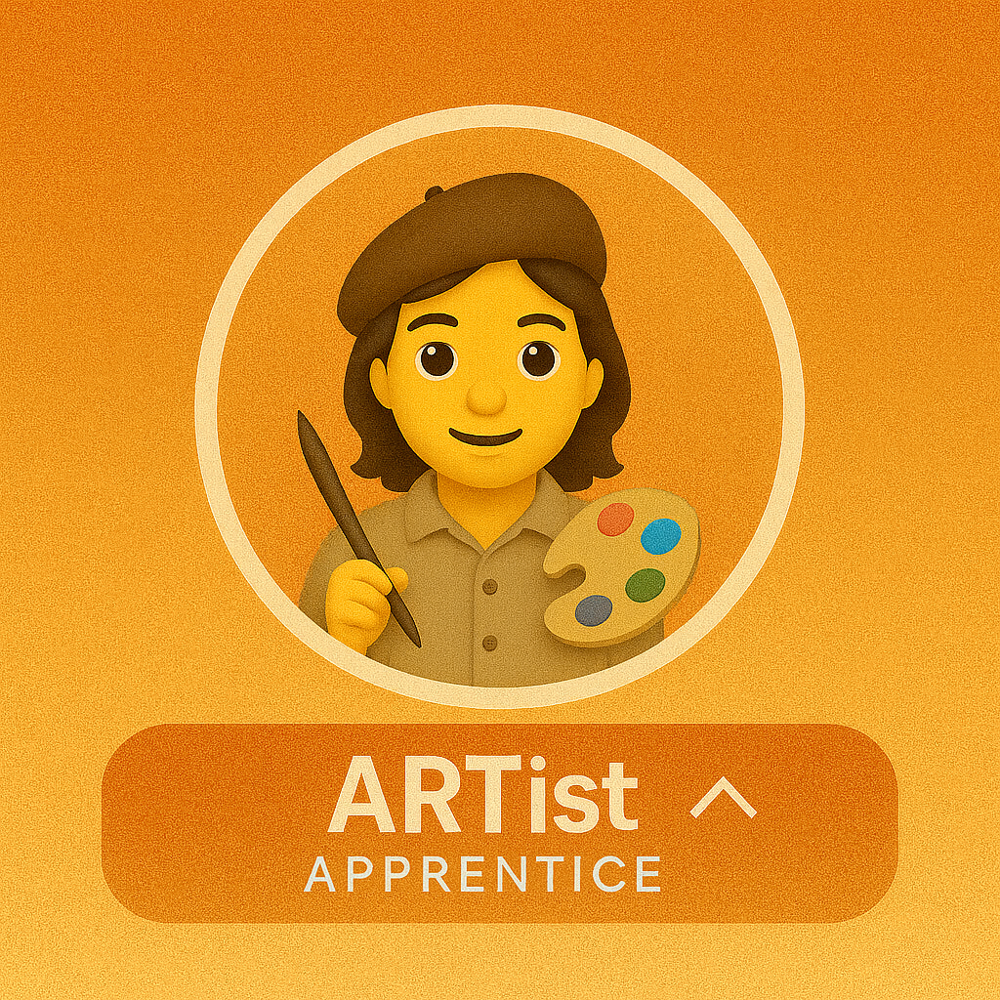
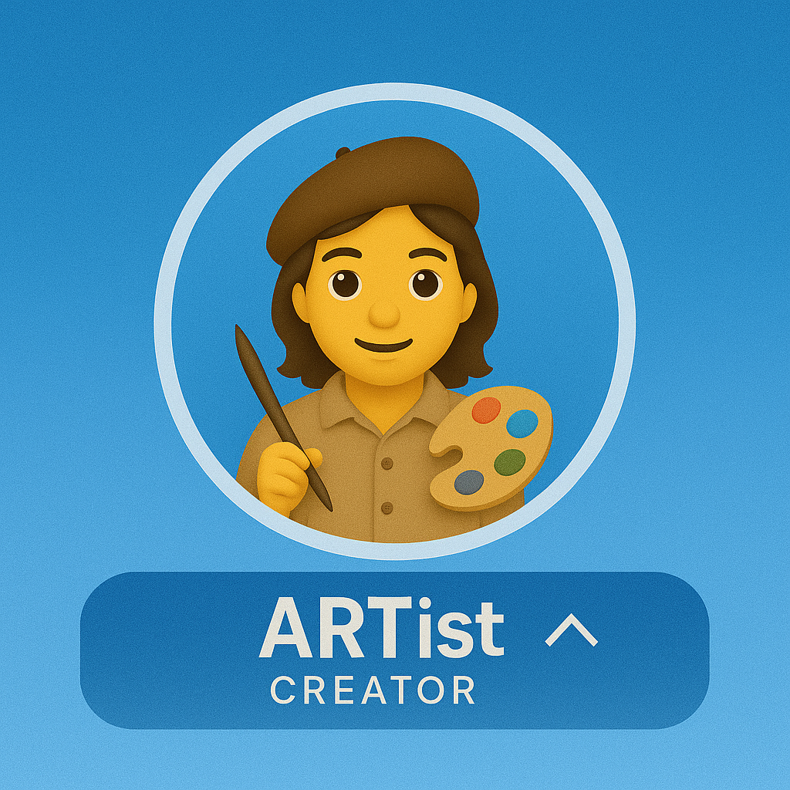
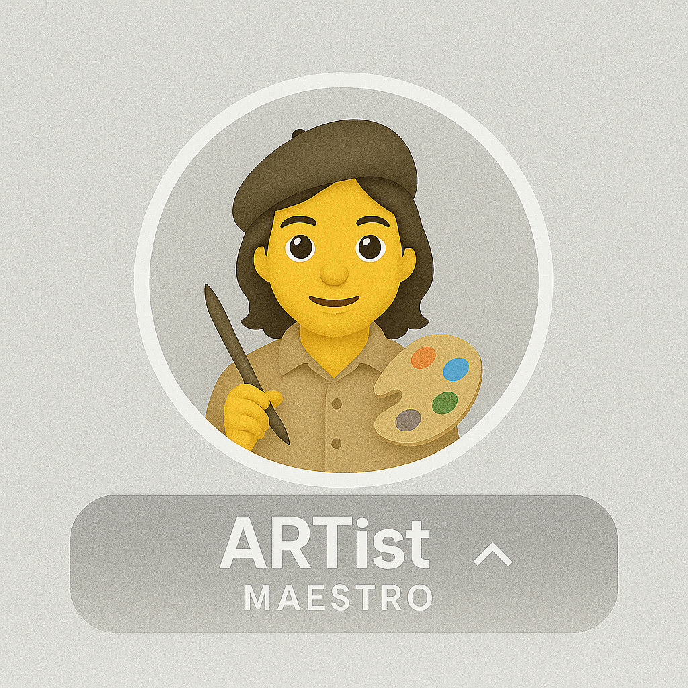

ARTist Certification Program
A three-level path that validates real-world skill with the ART Voice Agent Accelerator — from your first local call, to custom agents, to production at scale.
ARTist = Artist + ART (Azure Real-Time Voice Agent Framework). The program recognizes practitioners who can deploy, extend, and operate real-time voice agents in production.
Brand new? Start with the Get started guide, run a call end-to-end, then come back here and aim for Apprentice first.
Three levels, one path
Each level builds on the last. Pick the one that matches where you are today.

Apprentice
Run the framework locally, demo it confidently, and explain the end-to-end voice pipeline.
View requirements →
Creator
Build a custom YAML agent, integrate a tool, and contribute back to the community.
View requirements →
Maestro
Ship to production with observability, security, performance budgets, and mentor others.
View requirements →Level 1 — Apprentice
Run it. Demo it. Explain it.
You can stand the framework up on your own machine, drive an end-to-end voice call, and explain how audio flows from the phone to the model and back.
Technical checklist
- Run the UI (frontend + backend) locally
- Successfully demo the framework to others
- Understand the end-to-end call flow
- Explain ACS → Speech (STT/TTS) → LLM
- Describe Voice Live vs Speech Cascade modes
- Use the Agent Builder to run a custom flow
- Complete one end-to-end voice call demo
Documentation review
- Read the architecture overview
- Navigate the API reference
- Review the agent catalog
Portfolio evidence
- Screenshot of successful local deployment
- Brief architecture explanation (5–10 sentences)
- Recording or log of a completed voice call
Level 2 — Creator
Build something that talks back.
You design custom agents in YAML, wire them to real tools, and ship the result — then help the next person do the same.
Custom agent development
- Create a custom agent (
agents/<name>/agent.yaml) - Define prompt, greeting, and return greeting
- Configure handoff triggers for multi-agent flows
- Customize voice (name, rate, pitch) for your use case
- Test end-to-end with speech input + tool calls
Tool integration (choose one or more)
- External REST API (CRM, ticketing, payments)
- Database (Cosmos DB, PostgreSQL, etc.)
- Custom business-logic tool
- Third-party service (Twilio, Stripe, etc.)
Community contributions
- File a bug report with reproduction steps
- Submit a documentation improvement PR
- Answer a question in GitHub Discussions
Portfolio evidence
- Link to a GitHub repo with your custom agent YAML
- Demo video or call recording (2–5 minutes)
- Code snippet showing your tool integration
- Links to your GitHub contributions (issues, PRs, discussions)
Level 3 — Maestro
Ship it. Operate it. Teach it.
You run real-time voice systems in production with observability, security guardrails, performance budgets, and contribute back to the framework itself.
Production deployment
- Deploy to Azure with Bicep or Terraform
- Configure ACS for PSTN or SIP integration
- Implement health checks and readiness probes
- Document deployment architecture and runbooks
Observability & performance
- Instrument code with OpenTelemetry spans
- Set up tracing in App Insights or Jaeger
- Hit < 1s P95 for STT → LLM → TTS
- Configure connection pooling (Warmable / OnDemand)
- Implement resource limits and backpressure
Advanced development (choose one or more)
- Extend ACS event handlers for custom call control
- Build custom media processing (VAD tuning, audio prep)
- Implement stateful handoffs and context transfer
- Contribute a framework enhancement (new pool, etc.)
Security & compliance
- Implement authentication flow (
auth_agentpattern) - PII detection / redaction (Content Safety or custom)
- Audit logging for HIPAA / GDPR / PCI-DSS
- Secret management with Key Vault + Managed Identity
Community leadership
- Review and merge community PRs
- Lead a workshop or create a video tutorial
- Mentor 2+ developers through certification
Portfolio evidence
- Production deployment URL or architecture diagram
- Observability dashboard screenshot (traces, metrics, logs)
- Performance report demonstrating P95 latency < 1s
- Security documentation (auth flow, PII handling, compliance)
- Evidence of mentorship (PR reviews, workshop slides, tutorials)
How to get certified
The self-assessment path. Five steps from "I think I'm ready" to badge in hand.
Complete the technical checklist for your level
Work through every item under Apprentice, Creator, or Maestro. Tick them off as you go.
Assemble your portfolio evidence
Gather the screenshots, repo links, recordings, and reports listed under Portfolio evidence for your level. Keep links public.
Open a GitHub Discussion
Title format: [ARTist Certification] <Level> - <Your Name>. Paste in your portfolio links and a short summary.
Program maintainers review
Expected response time: 5 business days. Reviewers may ask follow-up questions in the same thread.
Receive your badge & Hall of Fame entry
On approval you get the badge image, a Hall of Fame listing, and the markdown snippet to drop into your GitHub profile.
Workshop fast-track
Skip the self-assessment queue by attending an official workshop. Participants get expedited review.
| Level | Format | Duration | Outcome |
|---|---|---|---|
| Apprentice | Onboarding session | 2 hours | Deployment + architecture review |
| Creator | Hands-on lab | Full day | Build a custom agent with guidance |
| Maestro | Architecture review + mentorship | Ongoing | Production readiness assessment |
Want to host or attend a workshop? Open a GitHub Discussion and tag the maintainers — see Contact.
Hall of Fame
Practitioners recognized for expertise in real-time voice AI.
Maestros Level 3
| Name | GitHub | Organization |
|---|---|---|
| Pablo Salvador Lopez | @pablosalvador10 | Microsoft |
| Jin Lee | @JinLee794 | Microsoft |
Creators Level 2
| Name | GitHub | Organization |
|---|---|---|
| Be the first Creator! | ||
Apprentices Level 1
| Name | GitHub | Organization |
|---|---|---|
| Complete onboarding to join! | ||
Add the badge to your profile
Show off your certification on GitHub. Replace the badge filename with the level you earned.
<!-- In your GitHub profile README.md -->
<img src="https://raw.githubusercontent.com/Azure-Samples/art-voice-agent-accelerator/main/docs/badges/artistacreator.png" alt="ARTist Creator" width="200"/>
Certified ARTist — crafting real-time voice AI with the ART framework.
[About ARTist Certification →](https://azure-samples.github.io/art-voice-agent-accelerator/certification.html)Badge filenames
| Level | Filename | Recommended width |
|---|---|---|
| Apprentice | badges/artistapprentice.png | 200 px |
| Creator | badges/artistacreator.png | 200 px |
| Maestro | badges/artistamaestro.png | 200 px |
Contact & support
Submit for review
Open a Discussion titled [ARTist Certification] <Level> - <Name>. Tag @pablosalvador10 or @JinLee794.
Bugs & features
File a GitHub Issue with repro steps for bugs, or a feature request for new capabilities.
CommunityQuestions & ideas
Architecture, implementation, and "how should I…?" go in Discussions. Expected response: 5 business days.
The ARTist certification program is maintained by the ART Voice Agent Accelerator community.